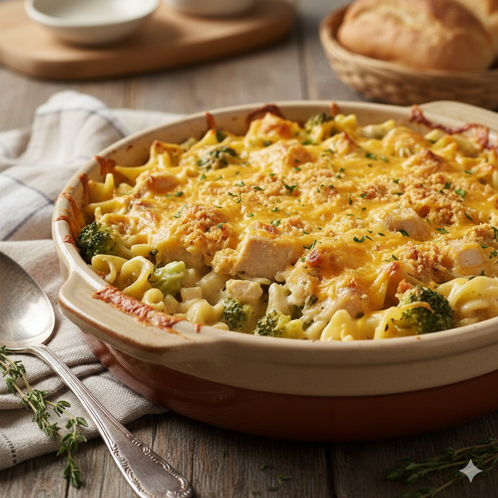

Chicken Casserole

Description
Chicken casserole is the quintessential "one-pot" comfort meal, designed to be
both hearty and soul-warming. It typically features tender bite-sized pieces of
chicken combined with a creamy base—often made from a bechamel sauce or a savory
mushroom or chicken soup. To add texture and color, the dish is usually packed
with vegetables like broccoli, peas, or carrots and bulked up with egg noodles,
rice, or sliced potatoes.
Ingredients
- Protein: 2 lbs cooked chicken breast or rotisserie chicken (shredded)
- Base: 2 cups cooked egg noodles or white rice
- Sauce: 1 can cream of mushroom soup, 1/2 cup sour cream, 1/4 cup milk
- Vegetables: 2 cups chopped broccoli florets or frozen peas and carrots
- Topping: 1 cup shredded cheddar cheese, 1/2 cup crushed crackers, 2 tbsp melted butter
- Seasoning: Garlic powder, salt, black pepper, and dried thyme
Steps
- Preheat your oven to 350°F. In a large mixing bowl, combine the shredded
chicken, cooked noodles or rice, and your choice of vegetables.
- In a separate smaller bowl, whisk together the cream soup, sour cream, milk,
and seasonings until smooth, then fold this mixture into the chicken and starch until
everything is well-coated.
- Transfer the mixture into a greased baking dish and spread it out evenly.
- Top with a generous layer of shredded cheese and the buttered cracker
crumbs.
- Bake for 25 to 30 minutes until the sauce is bubbling and the topping has
turned a golden brown.
- Let it rest for five minutes before serving.
Home